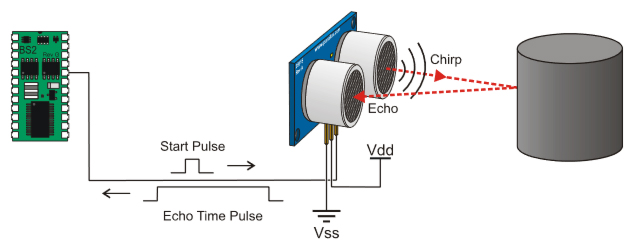
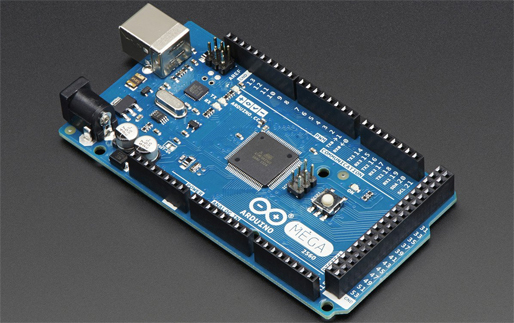

Introduction¶
HC-SR04 Ultrasonic Sensor¶

The HC-SR04 Ultrasonic Module has 4 pins, Ground, VCC, Trig and Echo. The Ground and the VCC pins of the module needs to be connected to the Ground and the 5 volts pins on the Arduino Board respectively and the trig and echo pins to any Digital I/O pin on the Arduino Board.
The sensor works by transmitting an ultrasonic burst at a frequency of 40,000Hz and providing an output pulse that corresponds to the time required for the burst echo to return to the sensor. By measuring the echo pulse width, the distance to target can easily be calculated.
{kind=link}
Features:
- Provides precise, non-contact distance measurements within a 1” to 13’ range
- Simple pulse in/pulse out communication requires just one I/O pin
- 4-pin header makes it easy to connect to any development board such as the breadboard we are using in class
Details:
- Range: approximately 1 inch to 13 feet (2 cm to 3 m)
- 4-pin male header
- Power requirements: +5 VDC; 35 mA active
- Dimensions: 0.81 x 1.8 x 0.6 in (22 x 46 x 16 mm)
Arduino MEGA 2560¶
{kind=link}
Features:
- Microcontroller board based on the ATmega2560
- 54 digital input/output pins
- 16 analog inputs
- Open-source Arduino IDE software for coding
Details:
- The Mega 2560 can be powered via the USB connection or with an external power supply
- 256 KB of flash memory for storing code
- 8 KB of SRAM and 4 KB of EEPROM
- 16 MHz crystal oscillator
Demonstration¶
We’ll demonstrate our project by using it as a proximity sensor to nearby objects, obstacles, and walls. Audible and visible cues will notify the user as the distance between the obstacle and sensor becomes smaller over time.